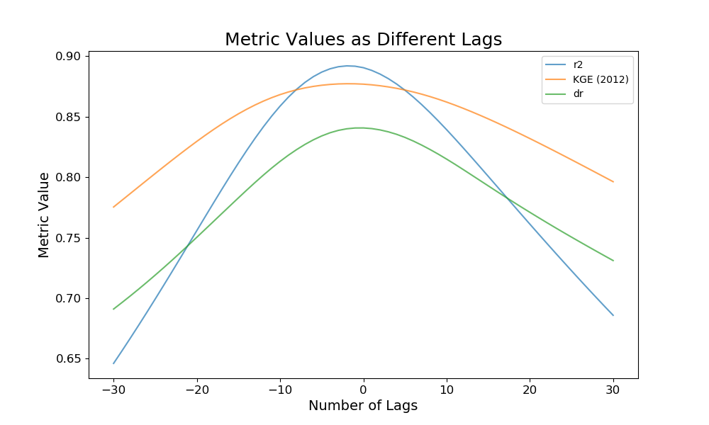

time_lag¶
-
hydrostats.analyze.time_lag(merged_dataframe, metrics, interp_freq='6H', interp_type='pchip', shift_range=(-30, 30), mase_m=1, dmod_j=1, nse_mod_j=1, h6_mhe_k=1, h6_ahe_k=1, h6_rmshe_k=1, d1_p_obs_bar_p=None, lm_x_obs_bar_p=None, replace_nan=None, replace_inf=None, remove_neg=False, remove_zero=False, plot=False, plot_title='Metric Values as Different Lags', ylabel='Metric Value', xlabel='Number of Lags', save_fig=None, figsize=(10, 6), station=None)¶ Check metric values between simulated and observed data at different time lags.
Runs a time lag analysis to check for potential timing errors in the simulated data. Can also create a plot using matplotlib of the metric values at different shifts.
Parameters: - merged_dataframe: DataFrame
A pandas dataframe that has two columns of predicted data (Col 0) and observed data (Col 1) with a datetime index.
- metrics: list of str
Metric abbreviations that the user would like to use in their lag analysis.
- interp_freq: str, optional
Frequency of the interpolation for both the simulated and observed time series.
- interp_type: str, optional
Type of interpolation. Options are ‘linear’, ‘pchip’, or ‘cubic’.
- shift_range: tuple of 2 floats, optional
If given, specifies the range of the lag shifts. For example, if (-10, 10) was given, the function would shift the simulated array for all of the range between -10 and 10.
- mase_m: int, Optional
Parameter for the mean absolute scaled error (MASE) metric.
- dmod_j: int or float, optional
Parameter for the modified index of agreement (dmod) metric.
- nse_mod_j: int or float, optional
Parameter for the modified Nash-Sutcliffe (nse_mod) metric.
- h6_mhe_k: int or float, optional
Parameter for the H6 (MHE) metric.
- h6_ahe_k: int or float, optional
Parameter for the H6 (AHE) metric
- h6_rmshe_k: int or float, optional
Parameter for the H6 (RMSHE) metric
- d1_p_obs_bar_p: float, optional
Parameter fot the Legate McCabe Index of Agreement (d1_p).
- lm_x_obs_bar_p: float, optional
Parameter for the Lagate McCabe Efficiency Index (lm_index).
- replace_nan: float, optional
If given, indicates which value to replace NaN values with in the two arrays. If None, when a NaN value is found at the i-th position in the observed OR simulated array, the i-th value of the observed and simulated array are removed before the computation.
- replace_inf: float, optional
If given, indicates which value to replace Inf values with in the two arrays. If None, when an inf value is found at the i-th position in the observed OR simulated array, the i-th value of the observed and simulated array are removed before the computation.
- remove_neg: boolean, optional
If True, when a negative value is found at the i-th position in the observed OR simulated array, the i-th value of the observed AND simulated array are removed before the computation.
- remove_zero: boolean, optional
If true, when a zero value is found at the i-th position in the observed OR simulated array, the i-th value of the observed AND simulated array are removed before the computation.
- plot: bool, optional
If True, a plot will be created that visualizes the different error metrics at the different time lags.
- plot_title: str, optional
If the plot parameter is true, this parameter will set the title of the plot.
- ylabel: str, optional
If the plot parameter is true, this parameter will set the y axis label of the plot.
- xlabel: str, optional
if the plot parameter is true, this parameter will set the x axis label of the plot.
- save_fig: str, optional
If given, will save the matplotlib plot to the specified directory with the specified file name (e.g. /path/to/plot.png). A list of all available types of figures is given in List of Plot File Types.
- figsize: tuple of length 2
Tuple that specifies the horizontal and vertical lengths of the plot, in inches.
- station: str
The station of analysis. Includes the station in the table if given.
Returns: - Tuple of DataFrames
The first DataFrame contains all of the metric values at different time lags, while the second dataframe contains the maximum and minimum metric values throughout the time lag, and the index of the maximum and minimum time lag values.
Notes
If desired, users can export the tables to a CSV or Excel Workbook. This can be done using the built in methods of pandas. A link to CSV method can be found at https://pandas.pydata.org/pandas-docs/stable/generated/pandas.DataFrame.to_csv.html and a link to the Excel method can be found at https://pandas.pydata.org/pandas-docs/stable/generated/pandas.DataFrame.to_excel.html
Examples
Using data from the Streamflow prediction tool RAPID model and the ECMWF model, we can conpare the two at different time lags
>>> import hydrostats.analyze as ha >>> import hydrostats.data as hd >>> pd.options.display.max_columns = 50 >>> >>> # Defining the URLs of the datasets >>> sfpt_url = r'https://github.com/waderoberts123/Hydrostats/raw/master/Sample_data/sfpt_data/magdalena-calamar_interim_data.csv' >>> glofas_url = r'https://github.com/waderoberts123/Hydrostats/raw/master/Sample_data/GLOFAS_Data/magdalena-calamar_ECMWF_data.csv' >>> # Merging the data >>> merged_df = hd.merge_data(sfpt_url, glofas_url, column_names=('SFPT', 'GLOFAS'))
There are two dataframes that are returned as part of the analysis.
>>> # Running the lag analysis >>> time_lag_df, summary_df = ha.time_lag(merged_df, metrics=['ME', 'r2', 'RMSE', 'KGE (2012)', 'NSE']) >>> summary_df Max Max Lag Number Min Min Lag Number ME 174.740510 -28.0 174.740510 -24.0 r2 0.891854 -2.0 0.646193 -30.0 RMSE 3142.795474 -30.0 1754.455598 -2.0 KGE (2012) 0.877116 -2.0 0.775328 -30.0 NSE 0.856358 -2.0 0.539076 -30.0
A plot can be created that visualizes the different metrics throughout the time lags. It can be saved using the savefig parameter as well if desired.
>>> _, _ = ha.time_lag(merged_df, metrics=['r2', 'KGE (2012)', 'dr'], plot=True)